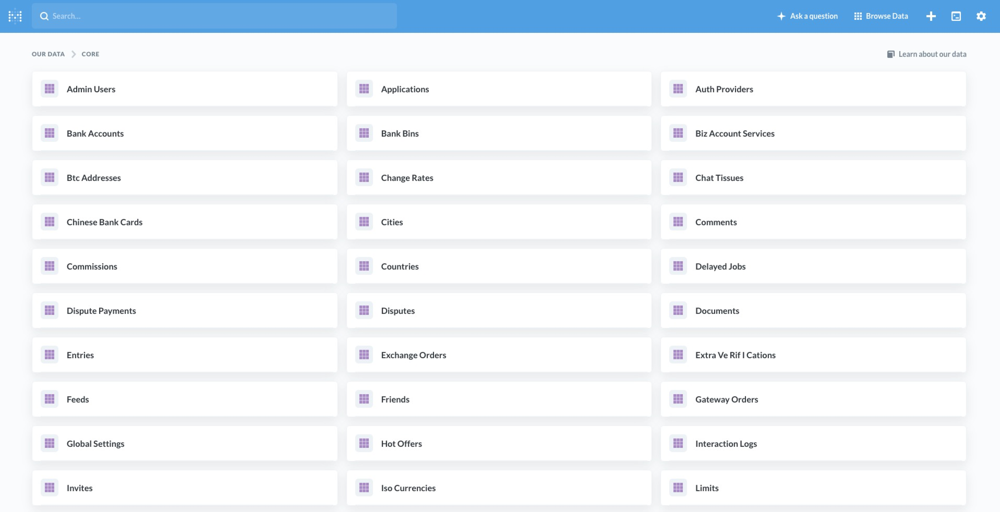

Customer digital wallets and bank accounts
Sign-up (Customer on-boarding)
Personal accounts are registered on the login page. A new customer can go through the registration process independently, in two places.
On the bank product authorisation page:
On the authorisation page of the Digital assets app:
In order to pass, it is necessary to specify the parameters email, phone, first name, last name, password and select the country.
Sing-up (Business on-boarding)
Business accounts can be registered on the authorisation page of the Digital assets application, or manually in the manage application core.
In order to pass, you need to select the business account type, as well as specify the values email, phone, company name, registration number, first name, last name, password and select country.
Sing-in (2FA)
The authorisation process is done either from the banking app or through crypto-application.
After entering your personal details, you will be prompted to enter the code from the text message sent to the number you provided during registration.
Customer due dilligence (KYC)
After registration and authorisation, you will be required to go through an identification process. The Sumsub service is used for verification and will require passport details as well as photos of the client.
Opening bank account
The request to create a bank account button can be found on the page with the list of current accounts.
The currency of the account must be specified in order to register the application. After submitting the application, it must be confirmed on the manager page.
Opening digital asset account
After completing the account registration, a BTC and ETH wallet number will be automatically created and assigned.
Customer profile
Crypto accounts balance, change password, enable 2FA functionality can be viewed/changed on the dashboard page.
Edition the banking profile in the Settings tab.
Transferring money to the account (Top-Up)
Bank accounts are deposited manually on the managers page, only with an incoming payment, to the specified details on the “Receiving Money” page.
Transferring digital asset to the account
Deposit your cryptocurrency wallet on the Deposit page. After entering the required amount, a unique QR code for deposit. Also, under the QR code you will find your personal BTC/ETH wallet number.
Withdrawing funds from the account (Withdrawal)
The withdrawal request is made on the transfers page. To create a request, a beneficiary profile must be created.
After creating a beneficiary, create an application, specifying the outgoing account, details, amount, description and attach a document if necessary.
Withdrawing digital asset to the account
Cryptocurrency withdrawals are also made through applications on the Withdrawal page. Need to specify the amount, Choose (to start with) an incoming wallet, then you will be asked to pass KYC verification (only a face scan), After that the application will go to the manager for consideration.
Internal transfers
Internal transfers are made from the Qiuntex trasfers page. It is necessary to specify the outgoing and incoming account numbers, the amount and description of the payment. Transfers are made automatically.
Digital assets exchange operations
The exchange on the crypto-application side only exchanges fiat into cryptocurrency or vice versa. The page displays the current and up-to-date rate (based on Kraken rate), the amount of transfer fee, as well as the final amount:
Managing customer digital wallets and bank accounts
Manually creating a business account
For manual creation of profiles, as well as business profiles (accounts), you need to use the internal core/manage application. The Profiles page displays all the current accounts, as well as the functionality to create Business users (normal account type) or Business Accounts
Bank and digital account management
A list of incoming account creation requests, or manual creation functionality, is displayed on the Account Requests page.
KYC management workflow and approval
Depending on the type of integration with Sumsub, the KYC verification page, there is an option to approve or reject the application manually.

Managing customer’s profiles
The Profiles page displays a complete list of accounts. Each account can be “locked”, by calling the KYC functionality, it also allows you to update client information. Manual creation of users and business users can also be found on the Profiles page.
Manual money transfers
Manual deposit (or withdrawal) is on Payment Requests page. For deposit/withdrawal you should specify profile id, payer’s name, amount, currency and description.
Setting commission and fee
The flexy-commission service is used to regulate the commission on transactions. The service is based on rules, written in JSON syntax. Commissions can be set as a general or for each profile separately. Example of a rule for withdrawal with 10% commission + 10
Reporting and BI system (Account balances, Entries, Turn-over, etc)
To view complete information about all system data, such as list of profiles, balances, transactions, commissions external open-source system metabase is used. The system allows you to view the data of the database tables in a convenient format. It also allows to create own reports, upload data and notify by e-mail.
Core tables list:
Core wallets list (balances of client’s wallets):
Core feed (transaction details):